I'm Alex, and you're on my 'Instagram' page. Here, I've reimagined the layout of Instagram to focus more on the pictures, which are the heart of the platform, than the followers and likes and whatnot. I'm presenting a collection of images that I find novel or interesting. I took some photos myself, while others are from various sources across the internet. Send feedback to my email!

 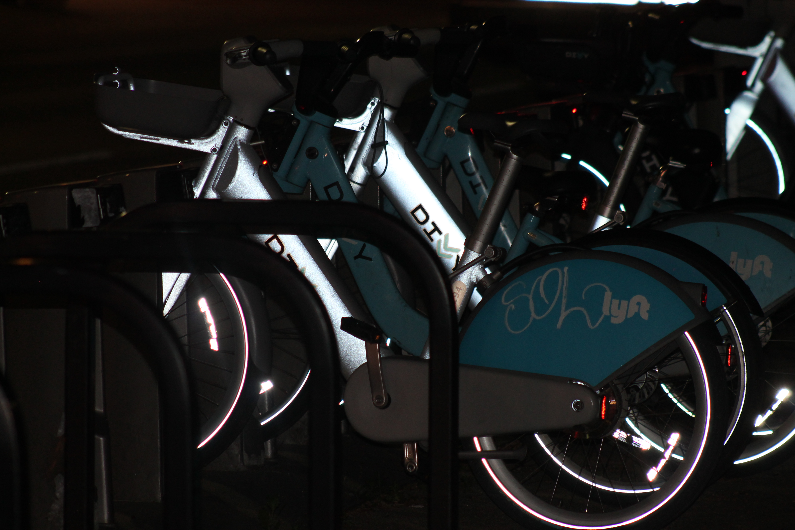
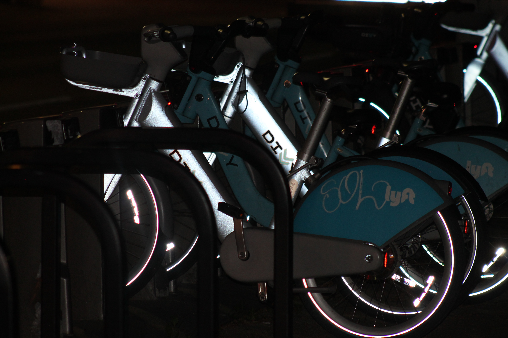

 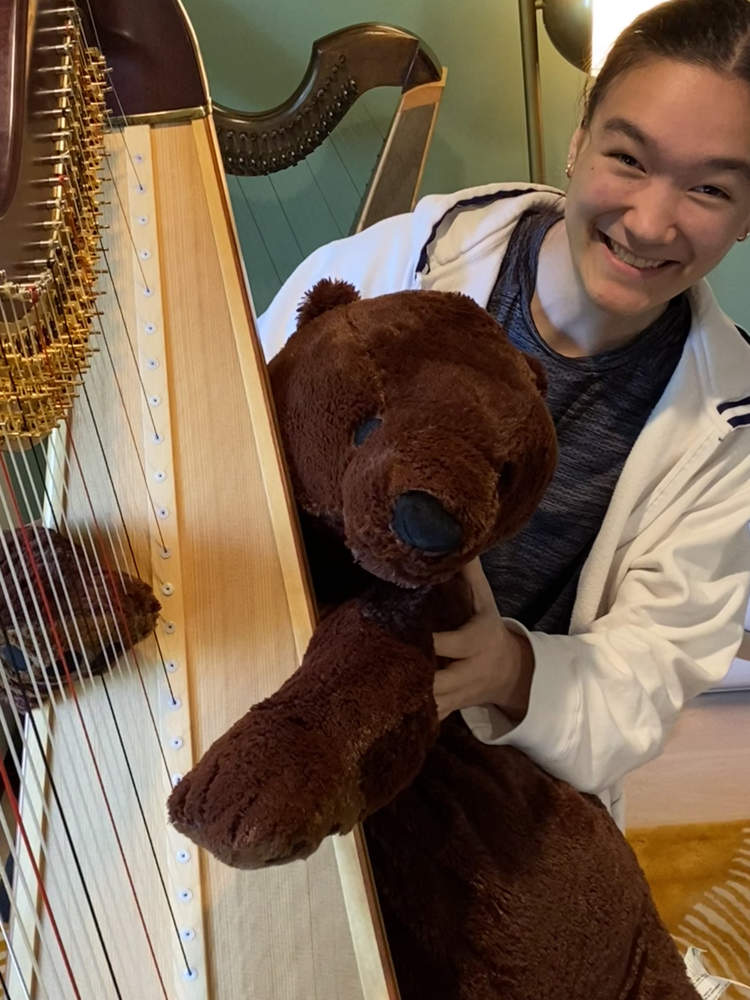
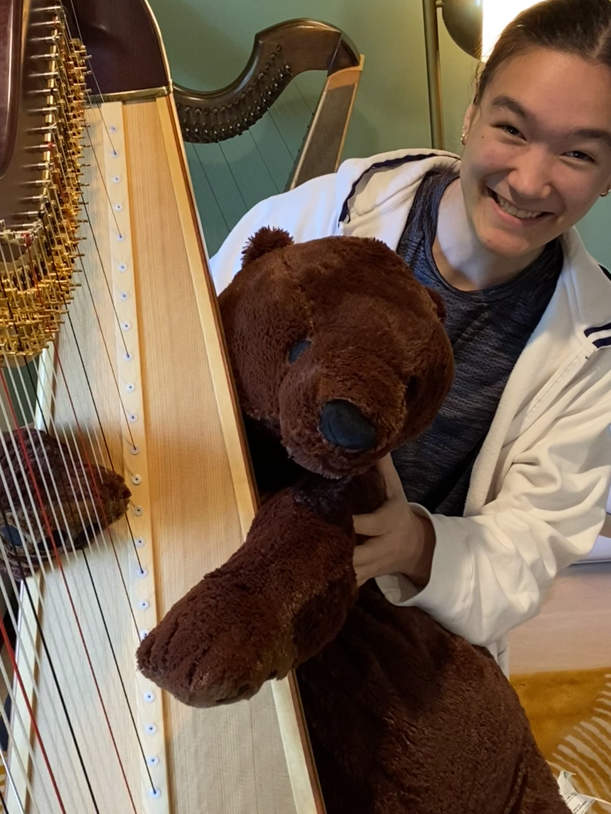
 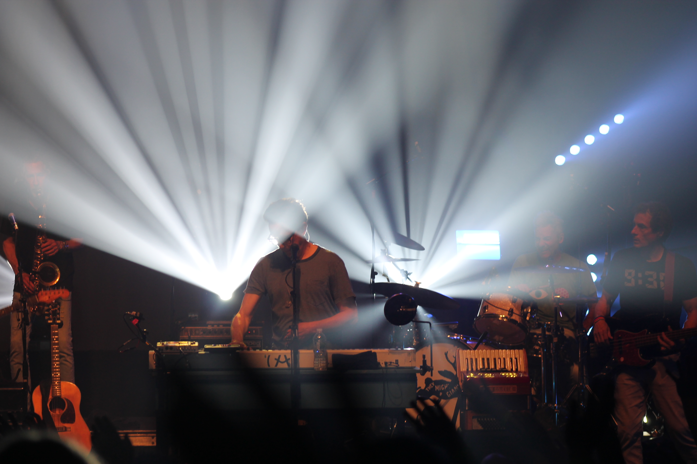
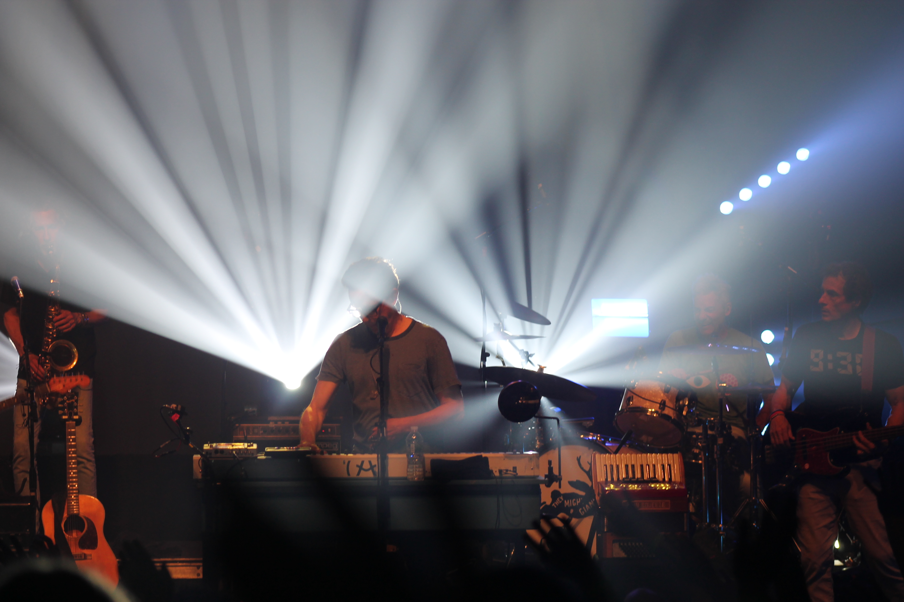

 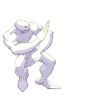
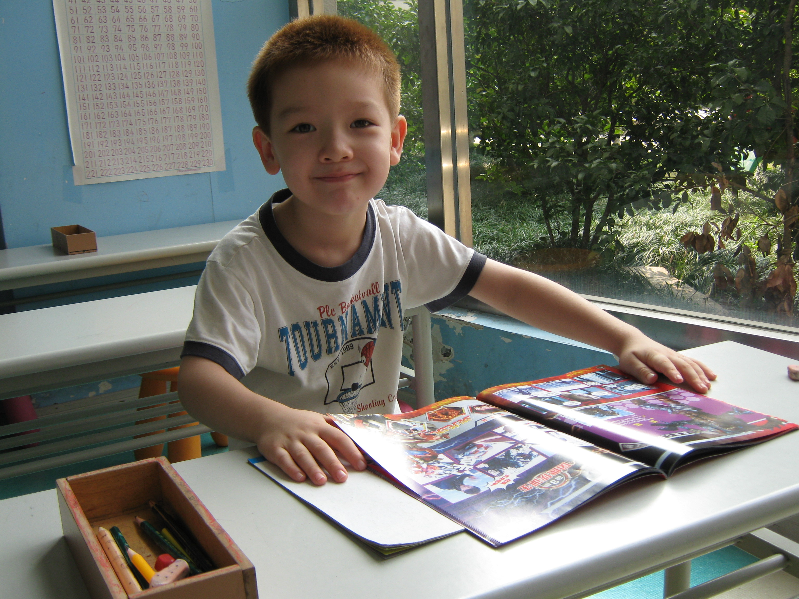
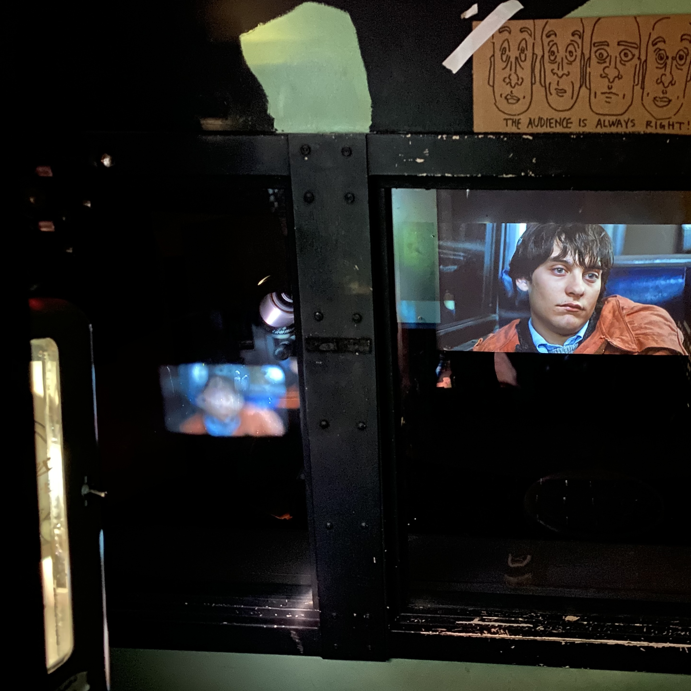
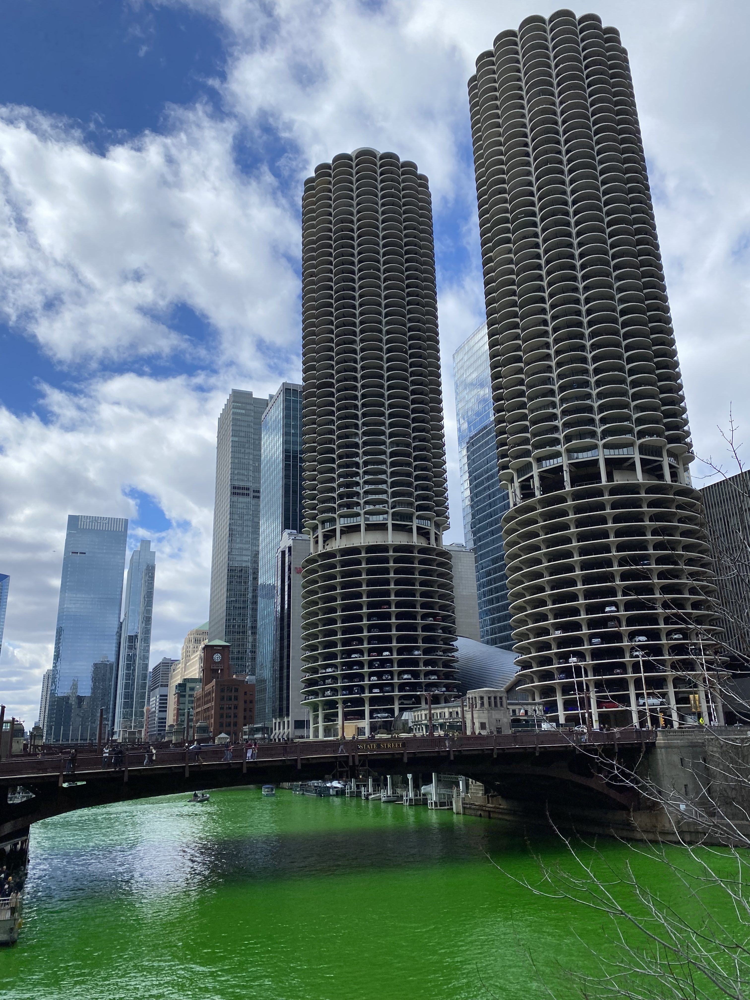
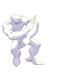
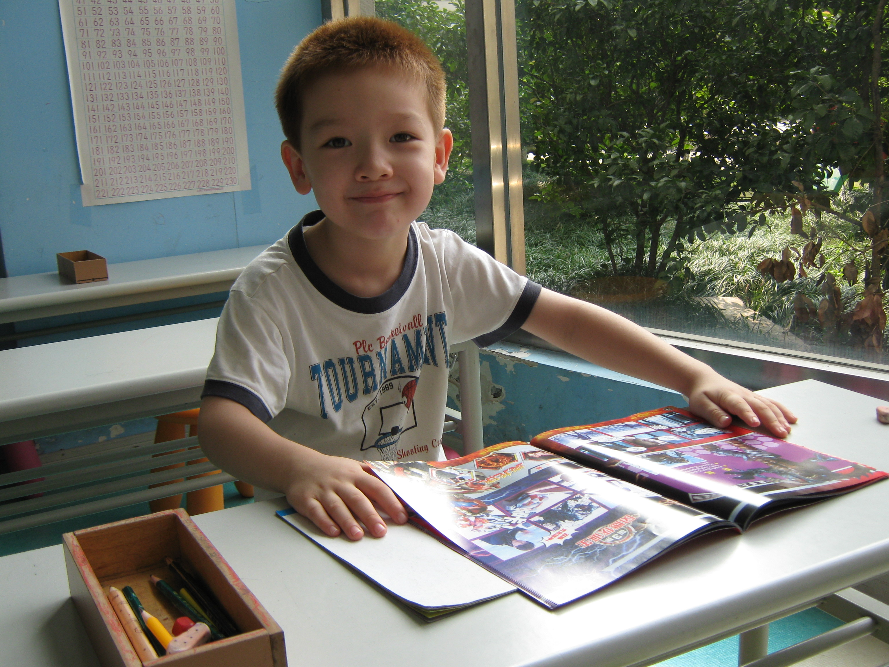
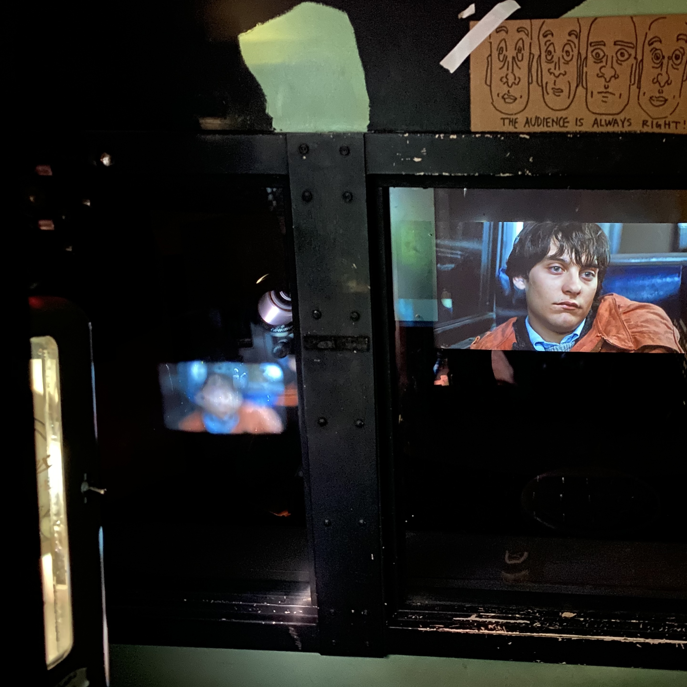
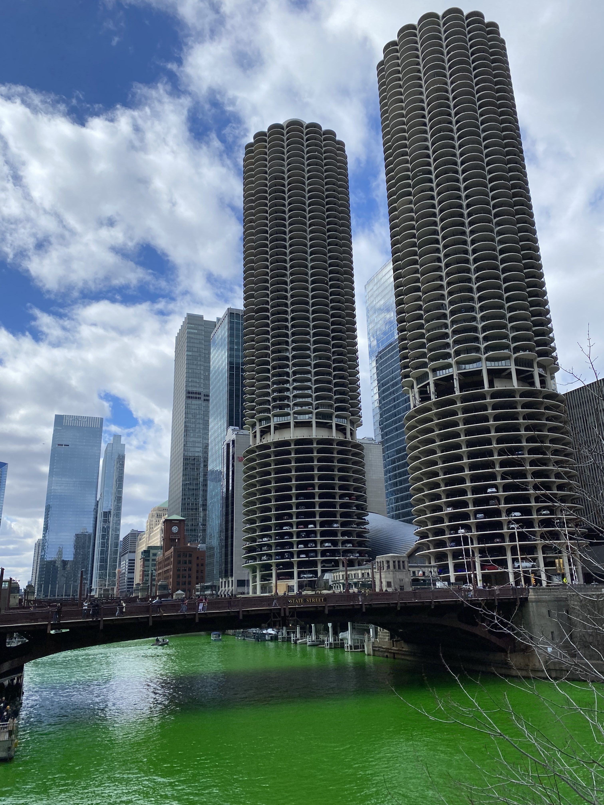